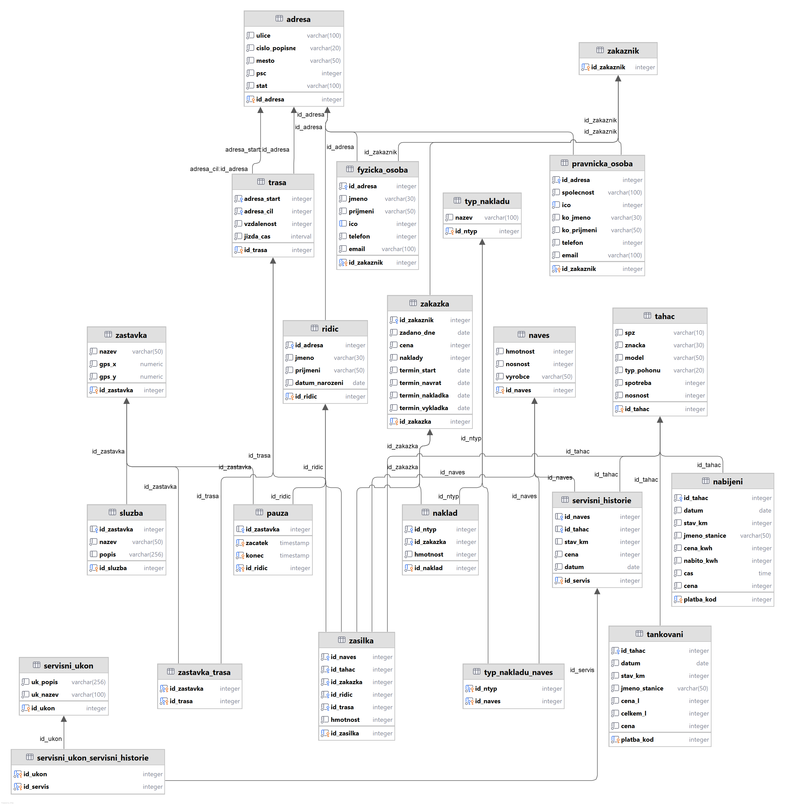

I declare that I have developed my semestral work independently. All the sources I used are listed in the section References.
Spediční firma Nedojel se specializuje na přepravu nákladů pomocí tahačů s různými typy návěsů. Klíčovým prvkem naší evidence jsou **zakázky**, které představují jednotlivé přepravní úkoly. Každá zakázka musí mít jednoznačný identifikátor a sledujeme u ní mimo jiné datum zadání, cenu, nebo podrobnosti o **nákladu**. Náklad může být rozdělen do více zásilek, kde každá má svého **řidiče**, **tahač**, **návěs** a **trasu**, po které se přeprava uskuteční. V plánované trase pak budou obsaženy plánované povinné zastávky k odpočinku řidiče a zároveň informace o vybavenosti místa(WC, sprcha, nabíjecí stanice, ...). Dále u zakázek evidujeme termín odjezdu z firmy a plánovaný termín návratu, aby bylo možné sledovat dostupnost řidičů.
**Zákazníkem** může být buď ***právnická osoba***, nebo ***fyzická osoba*** a každý ze zákazníků má pevně přiřazené unikátní číslo zákazníka. U právnických osob evidujeme název společnosti, identifikační číslo (IČO), fakturační údaje, kontaktní osobu a kontaktní údaje. U fyzických osob evidujeme jejich jméno, příjmení, v případě podnikatelů identifikační číslo (IČO), fakturační údaje a kontaktní telefon a e-mail. Každý zákazník může mít v systému více zakázek, a naopak jedna zakázka se vždy vztahuje k jednomu konkrétnímu zákazníkovi.
**Tahače** evidujeme s unikátním identifikačním číslem, značkou, modelem, rokem výroby a také státní poznávací značkou (SPZ). Sledujeme jejich typ pohonu – tedy zda jsou poháněny naftou, nebo elektřinou. Dále je pro nás klíčová spotřeba a kolik tun nákladu je každý tahač schopen utáhnout, což ovlivňuje výběr vhodného návěsu a přepravovaného nákladu.
**Řidiči** jsou důležitou součástí firmy, a proto u nich evidujeme osobní číslo, které je po celou dobu jejich zaměstnání neměnné. Dále sledujeme jejich jméno, adresu, plat, rodé číslo, datum narození a datum vypršení řidičského oprávnění.
**Návěsy** jsou dalším nezbytným prvkem přepravy a ke každému z nich evidujeme unikátní identifikační číslo, výrobce, typ nákladu který může být přepravován, hmotnost a také nosnost.
Protože tahače i návěsy podléhají opotřebení, firma vede **servisní historii**. Každý servisní záznam obsahuje *datum provedení*, typ opravy a evidenci nákladů na servis. Servis může být proveden jak na tahači, tak na návěsu. Do servisní historie zároveň zaznamenáváme i preventivní prohlídky.
Klíčovou součástí přepravy jsou **trasy**, kterými se jednotlivé zakázky realizují. Každá trasa obsahuje počáteční a koncový bod, plánovanou ujetou vzdálenost a plánovaný čas jízdy.
Zároveň je důležité pro efektivní fungování sbírat **data o tankování či nabíjení**. Každý záznam zde bude obsahovat id tahače, datum, jméno čerpací či dobíjecí stanice, cenu a celkový počet kilometrů tahače. U ***tankování*** následně chceme znát cenu za litr a počet natankovaných litrů. U ***nabíjení*** pak evidujeme množství odebrané elektrické energie, cenu za kWh a také dobu, kterou tahač strávil na nabíječce.

**1:** Smyčka, která nás dovedek entitě **Zastavka** ze strany entity **Pauza** a **Trasa** by měla být v pořádku, protože zastávka může být součástí trasy a zároveň místo pauzy. V ideálním případě by dokonce bylo žádoucí, aby všechny zastávky vázané k pauze byly taktéž obsaženy v trase.
**2:** Ve všech případech, kde se do smyčky dostává **Adresa** skutečně připouštíme, že se tato adresa může vyskytnout ve více vazbách zároveň.
**3:** U **Servisni_historie** máme mezi vazbami XOR a tak nám zde smyčkování nemůže nastat.

Kód dotazu: D1 [Tabulka pokryti kategorií SQL příkazů]
Nejčastěji používaný tahač
SELECT t.id_tahac, COUNT(*) AS pocet_zasilek FROM tahac t JOIN zasilka z ON t.id_tahac = z.id_tahac GROUP BY t.id_tahac ORDER BY pocet_zasilek DESC LIMIT 1;
Kód dotazu: D2 [Tabulka pokryti kategorií SQL příkazů]
Jméno nejmladšího řidiče.
SELECT jmeno FROM ridic ORDER BY datum_narozeni DESC LIMIT 1;
Kód dotazu: D3 [Tabulka pokryti kategorií SQL příkazů]
Seznam všech značek tahačů, které firma vlastní
tahac[znacka]
SELECT DISTINCT znacka FROM tahac
Kód dotazu: D4 [Tabulka pokryti kategorií SQL příkazů]
Vyber tahače, na kterých byly provedeny všechny servisní úkony
{{servisni_ukon_servisni_historie * servisni_historie}[id_tahac,id_ukon]÷servisni_ukon[id_ukon]} * tahac
SELECT * FROM tahac t WHERE NOT EXISTS( SELECT * FROM SERVISNI_UKON su WHERE NOT EXISTS ( SELECT 1 FROM SERVISNI_UKON_SERVISNI_HISTORIE shu JOIN SERVISNI_HISTORIE sh USING(id_servis) WHERE sh.id_tahac = t.id_tahac AND su.id_ukon = shu.id_ukon ) )
Kód dotazu: D5 [Tabulka pokryti kategorií SQL příkazů]
Vyber návěsy, které mohou přepravovat pouze náklad 15 (kapaliny)
{naves<naves.id_naves = typ_nakladu_naves.id_naves]typ_nakladu_naves(id_ntyp = 15)} \ {naves<naves.id_naves = typ_nakladu_naves.id_naves]typ_nakladu_naves(id_ntyp != 15)}
SELECT n.* FROM NAVES n JOIN TYP_NAKLADU_NAVES tnn USING(id_naves) WHERE tnn.id_ntyp=15 EXCEPT SELECT n.* FROM NAVES n JOIN TYP_NAKLADU_NAVES tnn USING(id_naves) WHERE tnn.id_ntyp!=15
Kód dotazu: D6 [Tabulka pokryti kategorií SQL příkazů]
Celková doba odpočinku řidiče 5 od 2.12.2024 do 9.12.2024
Kód dotazu: D7 [Tabulka pokryti kategorií SQL příkazů]
Počet zakázek od zákazníka s id 1
SELECT id_zakaznik, COUNT(*) AS pocet_zakazek FROM zakazka WHERE id_zakaznik = 1 GROUP BY id_zakaznik
Kód dotazu: D8 [Tabulka pokryti kategorií SQL příkazů]
Vypiš ke každému zákazníkovi počet zakázek které zadal. Zákazníky seřaď podle počtu zakázek od největšího.
SELECT *, (SELECT COUNT(*) FROM zakazka zak WHERE z.id_zakaznik= zak.id_zakaznik) AS pocet_zakazek FROM zakaznik z ORDER BY pocet_zakazek DESC;
Kód dotazu: D10 [Tabulka pokryti kategorií SQL příkazů]
Id, značka a model tahače, který ještě nebyl v servisu.
{tahac * {tahac[id_tahac] \ servisni_historie[id_tahac]}}[id_tahac,znacka,model]
SELECT t.id_tahac, t.znacka, t.model FROM TAHAC t LEFT JOIN SERVISNI_HISTORIE sh USING(id_tahac) WHERE sh.id_tahac IS NULL;
Kód dotazu: D11 [Tabulka pokryti kategorií SQL příkazů]
Zakázky, které mají datum zahájení v letošním roce(2025).
Zakazka(zadano_dne > '31.12.2024' ∧ zadano_dne < '01.01.2026')
SELECT * FROM ZAKAZKA WHERE zadano_dne > TO_DATE('31.12.2024','dd.mm.yyyy') AND zadano_dne < TO_DATE('01.01.2026','dd.mm.yyyy');
Kód dotazu: D12 [Tabulka pokryti kategorií SQL příkazů]
Všechny návěsy, které jsou určeny pro převoz nebezpečného zboží. typ_nakladu.nazev='Nebezpečný náklad (ADR)'
{naves [naves.id_naves=typ_nakladu_naves.id_naves] {typ_nakladu_naves [typ_nakladu_naves.id_ntyp = typ_nakladu.id_ntyp] typ_nakladu (nazev='Nebezpečný náklad (ADR)') } }[naves.id_naves, naves.vyrobce, typ_nakladu.nazev]
SELECT n.id_naves, n.vyrobce, tn.nazev FROM NAVES n JOIN TYP_NAKLADU_NAVES tnn USING(id_naves) JOIN TYP_NAKLADU tn USING(id_ntyp) WHERE tn.nazev='Nebezpečný náklad (ADR)'
Kód dotazu: D13 [Tabulka pokryti kategorií SQL příkazů]
Servisní úkony, které nebyly provedeny na tahači 14(id_tahac=14)
{servisni_ukon} \ {{servisni_historie(id_tahac = 14) [servisni_historie.id_servis = servisni_ukon_servisni_historie.id_servis]servisni_ukon_servisni_historie} [servisni_ukon_servisni_historie.id_ukon = servisni_ukon.id_ukon> servisni_ukon }
SELECT * FROM SERVISNI_UKON su EXCEPT SELECT DISTINCT sup.* FROM SERVISNI_HISTORIE sh JOIN SERVISNI_UKON_SERVISNI_HISTORIE suh USING(id_servis) JOIN SERVISNI_UKON sup USING(id_ukon) WHERE sh.id_tahac=( SELECT t.id_tahac FROM tahac t WHERE NOT EXISTS( SELECT * FROM SERVISNI_UKON su WHERE NOT EXISTS ( SELECT 1 FROM SERVISNI_UKON_SERVISNI_HISTORIE shu JOIN SERVISNI_HISTORIE sh USING(id_servis) WHERE sh.id_tahac = t.id_tahac AND su.id_ukon = shu.id_ukon ) ) );
Kód dotazu: D14 [Tabulka pokryti kategorií SQL příkazů]
Vypiš tahač, který nikdy nebyl přiřazen k žádné zásilce
zasilka !*> tahac
SELECT * FROM TAHAC WHERE id_tahac NOT IN ( SELECT id_tahac FROM ZASILKA )
Kód dotazu: D15 [Tabulka pokryti kategorií SQL příkazů]
Najdi id_trasa a jméno řidiče, která začíná u něj doma
{trasa [trasa.adresa_start = ridic.id_adresa] ridic} [id_trasa, jmeno]
SELECT t.id_trasa, r.jmeno FROM TRASA t JOIN RIDIC r ON r.id_adresa = t.adresa_start
Kód dotazu: D16 [Tabulka pokryti kategorií SQL příkazů]
Vypiš jaké všechny soupravy lze vytvořit (kombinace tahače a návěsu)
tahac × naves
SELECT * FROM TAHAC CROSS JOIN NAVES;
Kód dotazu: D17 [Tabulka pokryti kategorií SQL příkazů]
Zobraz všechny tahače a servisní záznamy spolu s počtem servisních úkonů v jednotlivých servisních záznamech. Pokud tahač nikdy v servisu nebyl, zobraz pouze tahač a pokud servis byl proveden na jiném vozidle než na tahači, tak zobraz pouze údaje o servisu. Následně seřaď vzestupně podle poču provedených úkonů.
SELECT x.id_servis, x.pocet_ukonu, t.id_tahac, t.znacka FROM (SELECT s.id_servis, s.id_tahac, COUNT(*) AS pocet_ukonu FROM servisni_historie s JOIN servisni_ukon_servisni_historie su USING(id_servis) GROUP BY id_servis ) x FULL OUTER JOIN tahac t ON x.id_tahac = t.id_tahac ORDER BY x.pocet_ukonu ASC;
Kód dotazu: D18 [Tabulka pokryti kategorií SQL příkazů]
Vyber zákazníky, kteří odeslali alespoň 3 zásilky a jejich průměrná hmotnost zásilek je vyšší než průměrná hmotnost zásilek všech zákazníků dohromady a zároveň zákazník je právnická osoba a sídlí v česku(stat='Česká republika'). Výsledky seřaď sestupně podle průměrné hmotnosti.
SELECT zak.id_zakaznik, COUNT(*) AS pocet_zasilek, AVG(z.hmotnost) AS prumerna_hmotnost FROM zasilka z JOIN zakazka zak USING(id_zakazka) JOIN pravnicka_osoba po USING (id_zakaznik) JOIN adresa a USING (id_adresa) where a.stat='Česká republika' GROUP BY zak.id_zakaznik HAVING COUNT(*) >= 3 AND AVG(z.hmotnost) > ( SELECT AVG(z2.hmotnost) FROM zasilka z2 ) ORDER BY AVG(z.hmotnost) DESC;
Kód dotazu: D19 [Tabulka pokryti kategorií SQL příkazů]
Ke každému řidiči vypiš počet odvezených zásilek.
SELECT *, (SELECT COUNT(*) FROM zasilka z WHERE r.id_ridic = z.id_ridic) AS pocet_zasilek FROM ridic r; SELECT r.*, COUNT(*) AS pocet_zasilek FROM ridic r JOIN zasilka USING (id_ridic) GROUP BY id_ridic UNION SELECT *, 0 AS pocet_zasilek FROM ( SELECT r.* FROM ridic r EXCEPT ( SELECT DISTINCT ri.* FROM ridic ri JOIN zasilka USING (id_ridic) ) ); SELECT r.*, COALESCE(p.pocet_zasilek, 0) AS pocet_zasilek FROM ridic r LEFT JOIN ( SELECT id_ridic, COUNT(*) AS pocet_zasilek FROM zasilka GROUP BY id_ridic ) p ON r.id_ridic = p.id_ridic;
Kód dotazu: D20 [Tabulka pokryti kategorií SQL příkazů]
Řidiči, kteří vezli nebezpečný náklad i elektroniku
SELECT r.* FROM ridic r JOIN zasilka USING (id_ridic) JOIN naklad USING(id_zakazka) JOIN typ_nakladu tn USING (id_ntyp) WHERE tn.nazev = 'Elektronika' INTERSECT SELECT r.* FROM ridic r JOIN zasilka USING (id_ridic) JOIN naklad USING(id_zakazka) JOIN typ_nakladu tn USING (id_ntyp) WHERE tn.nazev = 'Nebezpečný náklad (ADR)'
Kód dotazu: D21 [Tabulka pokryti kategorií SQL příkazů]
View zásilek s nebezpečným nákladem.
CREATE OR REPLACE VIEW nebezpecne_zakazky AS SELECT z.* FROM zasilka z JOIN naklad USING(id_zakazka) JOIN typ_nakladu tn USING(id_ntyp) WHERE tn.nazev = 'Nebezpečný náklad (ADR)';
Kód dotazu: D22 [Tabulka pokryti kategorií SQL příkazů]
Vyber tahače, které přepravovali nebezpečný náklad
-- Pro případ že by view neexistovalo CREATE OR REPLACE VIEW nebezpecne_zakazky AS SELECT z.* FROM zasilka z JOIN naklad USING(id_zakazka) JOIN typ_nakladu tn USING(id_ntyp) WHERE tn.nazev = 'Nebezpečný náklad (ADR)'; -- SELECT t.* FROM tahac t JOIN nebezpecne_zakazky USING (id_tahac) ;
Kód dotazu: D23 [Tabulka pokryti kategorií SQL příkazů]
Nový řidič má shodné údaje s řidičem s nejvyšším id_ridic
BEGIN; SELECT * FROM ridic; INSERT INTO ridic (id_adresa, jmeno, prijmeni, datum_narozeni) SELECT id_adresa, jmeno, prijmeni, datum_narozeni FROM ridic ORDER BY id_ridic DESC LIMIT 1; SELECT * FROM ridic; ROLLBACK;
Kód dotazu: D24 [Tabulka pokryti kategorií SQL příkazů]
Zvýšení nákladů o 2000 na každé zakázce, kde některou zásliku převážel řidič s id 3.
BEGIN; SELECT naklady FROM zakazka JOIN zasilka USING(id_zakazka) WHERE id_ridic = 3; UPDATE zakazka SET naklady = naklady + 2000 WHERE id_zakazka IN (SELECT id_zakazka FROM zasilka WHERE id_ridic = 3); SELECT naklady FROM zakazka JOIN zasilka USING(id_zakazka) WHERE id_ridic = 3; ROLLBACK;
Kód dotazu: D25 [Tabulka pokryti kategorií SQL příkazů]
Odstraň řidiče, kteří ještě neodvezli žádnou zásilku.
BEGIN; SELECT * FROM ridic; DELETE FROM ridic WHERE id_ridic IN ( SELECT id_ridic FROM ridic EXCEPT (SELECT id_ridic FROM ridic JOIN zasilka USING(id_ridic))); select * FROM ridic; ROLLBACK;
Kód dotazu: D26 [Tabulka pokryti kategorií SQL příkazů]
Vyber TOP 3 zákazníky s největší celkovou přepravenou hmotností
SELECT id_zakaznik, SUM(hmotnost) AS celkova_hmotnost FROM zasilka JOIN zakazka USING(id_zakazka) GROUP BY id_zakaznik ORDER BY celkova_hmotnost DESC LIMIT 3;
Kód dotazu: D27 [Tabulka pokryti kategorií SQL příkazů]
Návěsy, které mohou přepravovat více typů nákladu
SELECT id_naves, count(*) AS pocet_typu FROM typ_nakladu_naves GROUP BY id_naves HAVING COUNT(*) > 1 ORDER BY pocet_typu DESC
| Kategorie | Kódy porývajících dotazů | Charekteristika kategorie příkazu |
|---|---|---|
| A | D1 D4 D10 D12 D13 D15 D17 D18 D19 D20 D21 D22 D24 D25 D26 | A - Pozitivní dotaz nad spojením alespoň dvou tabulek |
| AR | D4 D10 D12 D13 D15 | A (RA) - Pozitivní dotaz nad spojením alespoň dvou tabulek |
| B | D14 | B - Negativní dotaz nad spojením alespoň dvou tabulek |
| C | D5 | C - Vyber ty, kteří mají vztah POUZE k ... |
| D1 | D4 | D1 - Vyber ty, kteří/které jsou ve vztahu se všemi - dotaz s univerzální kvantifikací |
| D2 | D13 | D2 - Kontrola výsledku dotazu z kategorie D1 |
| F1 | D1 D15 | F1 - JOIN ON |
| F1R | D15 | F1 (RA) - JOIN ON |
| F2 | D4 D5 D10 D12 D13 D17 D18 D19 D20 D21 D22 D24 D25 D26 | F2 - NATURAL JOIN|JOIN USING |
| F2R | D4 D5 D10 D12 D13 | F2 (RA) - NATURAL JOIN|JOIN USING |
| F3 | D16 | F3 - CROSS JOIN |
| F4 | D10 D19 | F4 - LEFT|RIGHT OUTER JOIN |
| F4R | D10 | F4 (RA) - LEFT|RIGHT OUTER JOIN |
| F5 | D17 | F5 - FULL (OUTER) JOIN |
| G1 | D4 D13 D14 D24 D25 | G1 - Vnořený dotaz v klauzuli WHERE |
| G1R | D4 D13 D14 | G1 (RA) - Vnořený dotaz v klauzuli WHERE |
| G2 | D17 D19 | G2 - Vnořený dotaz v klauzuli FROM |
| G3 | D8 D19 | G3 - Vnořený dotaz v klauzuli SELECT |
| G4 | D4 D13 | G4 - Vztažený vnořený dotaz (EXISTS, NOT EXISTS) |
| H1 | D19 | H1 - Množinové sjednocení - UNION |
| H2 | D5 D13 D19 D25 | H2 - Množinový rozdíl - MINUS nebo EXCEPT |
| H2R | D5 D13 | H2 (RA) - Množinový rozdíl - MINUS nebo EXCEPT |
| H3 | D20 | H3 - Množinový průnik - INTERSECT |
| I1 | D1 D7 D8 D17 D18 D19 D26 D27 | I1 - Agregační funkce (count|sum|min|max|avg) |
| I2 | D1 D7 D17 D18 D19 D26 D27 | I2 - Agregační funkce nad seskupenými řádky - GROUP BY (HAVING) |
| J | D19 | J - Stejný dotaz ve třech různých formulacích SQL |
| K | D18 | K - Všechny klauzule v 1 dotazu - SELECT FROM WHERE GROUP BY HAVING ORDER BY |
| L | D21 D22 | L - VIEW |
| M | D22 | M - Dotaz nad pohledem |
| N | D23 | N - INSERT, který vloží do některé tabulky množinu řádků, které jsou vybrány dotazem z vybraných tabulek (příkaz INSERT, ve kterém je klauzule VALUES nahrazena vnořeným poddotazem. |
| O | D24 | O - UPDATE s vnořeným SELECT příkazem |
| P | D25 | P - DELETE s vnořeným SELECT příkazem |
Když se na svou práci dívám zpětně, mám k ní několik postřehů. Téma databáze pro sledování přepravních zakázek jsem si vybral, protože mi přišlo zajímavé a prakticky využitelné. Ukázalo se však jako poměrně rozsáhlé, což se projevilo zejména množstvím entit, které bylo potřeba postupně přidávat, aby výsledná databáze alespoň vzdáleně připomínala reálnou implementaci takového systému. Pro skutečné nasazení by samozřejmě bylo nutné návrh dále upravit a rozšířit, nicméně pro základní demonstraci tento návrh postačuje.
Velkou výzvou bylo generování testovacích dat. Snažil jsem se, aby data dávala alespoň částečně smysl a nepůsobila zcela náhodně, což vyžadovalo nemalé množství úprav, kontrol a logického provázání mezi jednotlivými tabulkami.
Za velmi přínosné považuji požadavky na celou škálu různých dotazů. Nejenže mě to vedlo k hledání různých otázek, na které se lze nad databází dotazovat, ale často mě to přimělo nahlédnout na stejný problém z jiné perspektivy a vyzkoušet více způsobů jeho řešení.
Celkově jsem si díky této práci prohloubil své znalosti databázového návrhu i jazyka SQL a zároveň jsem získal lepší představu o praktickém fungování relační algebry.
https://md.gov.cz/Zivotni-situace/Silnicni-doprava/Mezinarodni-osobni-doprava-(2)/Legislativa-a-casto-kladene-dotazy/Rezim-ridicu
https://chatgpt.com/
https://gemini.google.com/
https://www.mockaroo.com/
Věci dostupné na stránkách předmětu, a to ať už samotný obsah stránek, vzorové práce, výuková videa a nebo záznamy z proseminářů. - https://courses.fit.cvut.cz/BI-DBS/